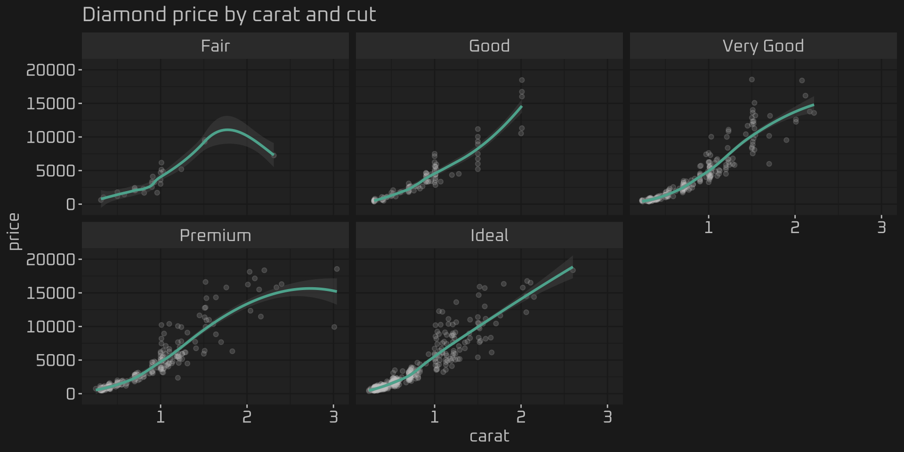
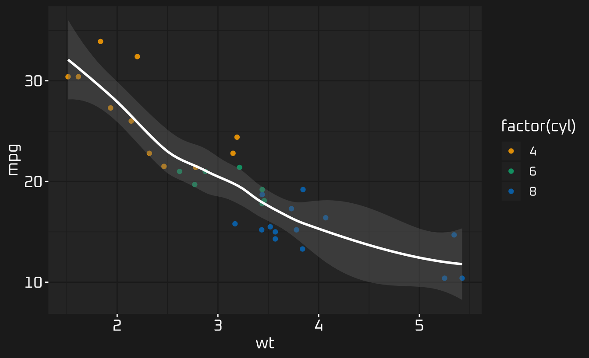
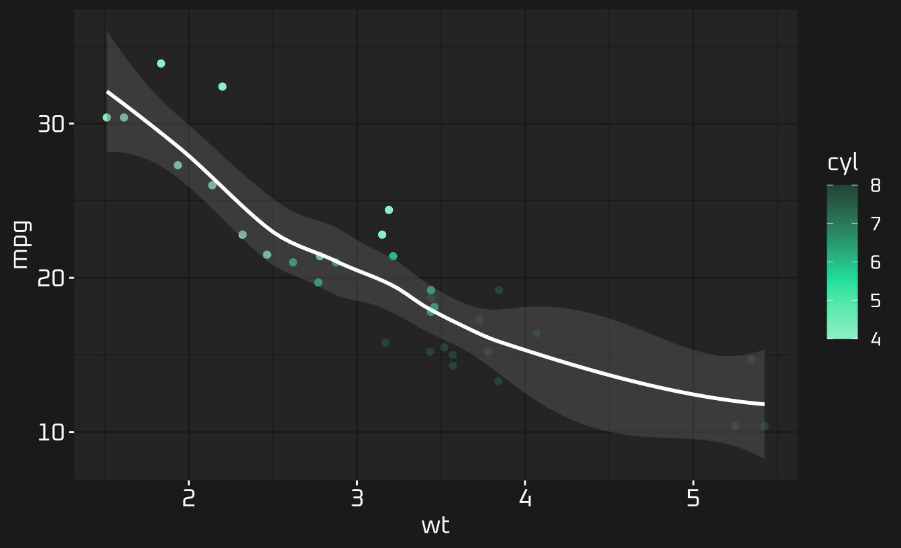

Unified and automatic theming of ggplot2, lattice, and base R graphics.
Installation
thematic is not yet available on CRAN, but you can install it now with:
remotes::install_github("rstudio/thematic") library(thematic)
In addition, for the auto-theming integration with shiny, you currently need:
remotes::install_github("rstudio/shiny#2740")
And, for auto-theming in rmarkdown::html_document():
remotes::install_github("rstudio/rmarkdown#1706")
If you don’t want to install these experimental versions, and just want to play around with some thematic examples, take a test drive on RStudio Cloud:

Getting started
thematic sets various graphing defaults based on a few different color and font settings. The main settings are background, foreground, accent, and font. These particular setting here intentionally match the styling of thematic’s website.
library(thematic) thematic_on( bg = "#222222", fg = "white", accent = "#0CE3AC", font = font_spec("Oxanium", scale = 1.25) )
Now, any future plot(s) inherit these settings (at least until thematic_off() is called):
library(ggplot2) ggplot(mtcars, aes(wt, mpg)) + geom_point() + geom_smooth()

In addition, thematic sets new defaults for qualitative color-scales (the default is based color-blind safe okabe_ito() color palette, but this may be customized via the qualitative argument to thematic_on()):
ggplot(mtcars, aes(wt, mpg)) + geom_point(aes(color = factor(cyl))) + geom_smooth(color = "white")

It also sets new defaults for sequential color scales based on the accent, bg, and fg (this default is also configurable via the sequential argument):
ggplot(mtcars, aes(wt, mpg)) + geom_point(aes(color = cyl)) + geom_smooth(color = "white")

Auto theming
thematic also has the ability to automatically detect the relevant colors and fonts in some scenarios, based on the current plotting context. The bg, fg, and accent arguments all default to 'auto' because they generally work where available, but you currently must opt-in to font detection:
thematic_on(font = "auto")
Auto theming works best with a shiny runtime, but it can also work under certain conditions inside rmarkdown and RStudio. For a quick demonstration, here’s a shiny app styled with a dark background, light foreground, and a Google Font (e.g. Pacifico), thematic can automatically mimic those styles in the R plots.

Font support
If a Google Font (e.g., Oxanium, Pacifico, etc) which isn’t already known to R is requested, thematic attempts to download, cache, and register that font for use with showtext and ragg before plotting. That means, if you have showtext installed, Google Fonts work ‘out-of-the-box’ in shiny and rmarkdown. Moreover, shiny, rmarkdown, and RStudio can all be configured to use ragg as well, which can also render custom fonts. For more details, see the Google Font rendering sections of the shiny, rmarkdown, and RStudio articles.
Of course, you can also specify fonts that are already known to R without necessarily have showtext or ragg. If you’d like to use a font that isn’t already known to R (and isn’t a Google Font), point sysfonts::font_add() (for showtext) or systemfonts::register_font() (for ragg) to the font files.